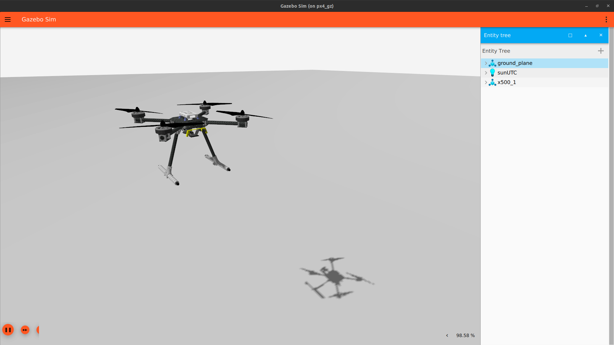

Simulator
Running Gazebo Garden with PX4 Autopilot via offboard control commands is set up in our sample repository. The simulator is set up using Docker container and implement a ROS2 and Gazebo Garden bridge for the ROS2 communication protocal to allow ROS2 scripts usage.

Repository
The PX4 Gazebo Docker Repository contains a run script for installation of most required dependencies required to run offboard control algorithm for quadrotors. The repository requires an Ubuntu operating system with Gazebo Garden installed. This can be done using respective dual boots with Ubuntu Operating systems. Dual-boot Ubuntu environment instructions
Navigate to the respective branch and clone the repository to download and clone the software package.
git clone https://github.com/w-sribunma/GZ-PX4-docker -b <branch name>
Dependencies
ROS2 and Gazebo bridge should be built from source. Please follow the link to navigate to the respective github repository and install the ros_gz package from source.
In the GZ-PX4-docker directory, navigate to ./get_src.sh and make make necessary adjustments to any linked repository.
Building the simulator
In the cloned package, build Docker image
docker compose build
Accessing the terminal shell for the setup service inside docker container, run the following command in two separate containers to start the container with a shell.
./run_dev.sh
docker exec -u user -it px4_gz-px4_gz-1 terminator
This action to open up a new terminator shell contained inside a docker container. Split the docker into 3 different panels or tabs.
-
Terminal 1:
- Navigate to px4 directory using
cd px4 - Build px4_sitl from the PX4 Autopilot
make px4_sitlwhen running this container shell for the first time. - To start the PX4 Gazebo Garden instance, run the PX4 autostart command
PX4_SYS_AUTOSTART=4001 PX4_GZ_MODEL=x500_lidar ./build/px4_sitl_default/bin/px4 -i 1to start the gazebo software with the PX4 X500 model with onboard 360 degrees lidar sensor. - Note models can be changed by modifying
PX4_GZ_MODEL=<model name> - To start PX4_sitl with a different world model, set
PX4_GZ_WORLD=<world name>
- Navigate to px4 directory using
-
Terminal 2:
- To run a DDS agent for Gazebo PX4 instance communication with ROS2, run
MicroXRCEAgent udp4 -p 8888
- To run a DDS agent for Gazebo PX4 instance communication with ROS2, run
- Terminal 3:
- This terminal serves to run any ROS2 packages required for the mission. Navigate to ros2_ws directory
cd ros2_wsand build ROS2 workspacecolcon build - Source ros2 environment
source install/setup.bash - From the built repository under px4_offboard package, run the desired offboard script with
ros2 run px4_offboard [script name]to communicate between simulator and ROS2 environment and use offboard control inputs with PX4 Autopilot.
- This terminal serves to run any ROS2 packages required for the mission. Navigate to ros2_ws directory